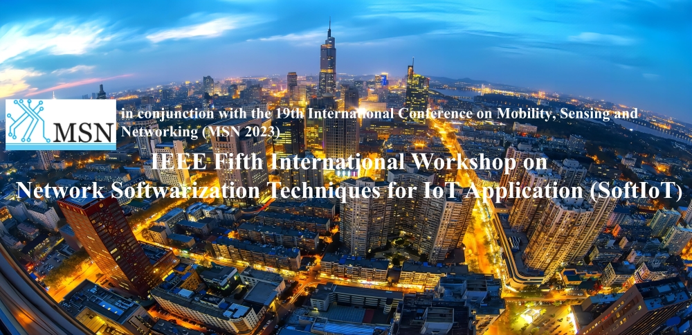

SoftIoT 2023
December 14-16, 2023
Nanjing, China
Call for Papers
The softwarization of networks is enabled by the SDN (Software Defined Networking), NV (Network Virtualization), and NFV (Network Function Virtualization) paradigms, and offers many advantages and convenience for network operators, service providers and datacenter providers. By adopting network softwarization techniques, more and more novel network services and novel applications can be operated and deployed. Internet of Things (IoT) has emerged as a revolution for the development of futuristic network services and applications, especially in current 5G and future 6G networks. It is one of the hottest trends in technology. IoT is transforming our future by interconnecting everything: humans, vehicles, appliances, utilities, infrastructures, street lights and anything through an intelligent connection. The evolution of IoT has been progressively adopted by various organizations and industrial communities. In IoT environment, the huge amount of data and resources requested by various smart devices and humans can be collected and investigated in an intelligent manner in order to improvise the decision making. Hence, there exists a great need of managing these data and resources in an efficient manner.
Given the strong interest in both industry and academia in the softwarization of telecommunication networks and cloud computing providers, this workshop aims at adopting network softwarization techniques for IoT applications. There are many interesting challenges currently requiring to be addressed by the research community, which aims at efficiently managing softwarized networks for IoT applications.
Topics of interest for this workshop, include, but are not limited to:
- Management of SDIs (Software-Defined Infrastructures) for IoT application
- APIs and management protocols for IoT application
- Virtualization of resources, services and functions in SDN and NFV for IoT application
- Management of software-defined datacenters for IoT application
- Efficient management of cloud computing infrastructures for IoT application
- Resource management of SDN- or NFV-based systems for IoT application
- Network slicing for IoT application
- SDN control plane optimizations for IoT application
- Network softwarization for IoT application
- Softwarized edge cloud infrastructures for IoT application
- Network management at the edge for IoT application
- Service Function Chains (SFCs) modeling and representation for IoT application
- Dynamic migration of network functions in SDN or NFV-based systems for IoT application
- Efficient network and service monitoring of SDN or NFV for IoT application
- Dynamic resource scaling based on user mobility in SDN- and NFV-based systems for IoT application
- QoS/QoE management and control in softwarized networks for IoT application
- Applying Blockchain technologies in softwarized networks for IoT application
- Integrating AI and DL technologies in resource management in softwarized networks for IoT application
Paper Submission Guidelines
Papers submitted to the workshop should be written in English conforming to the IEEE 2-column US-letter style IEEE Conference Template and submitted in pdf format. Prospective authors are invited to submit full papers up to 6 pages (Long Papers, including tables, figure and references) in length. Accepted and presented papers will be included into the IEEE explore. Authors of accepted papers, or at least one of them, are requested to register and present their work at the conference, otherwise their papers will be removed from the digital libraries of IEEE after the conference.
Submission Link:
https://easychair.org/conferences/?conf=msn2023. Please select 'SoftIot'.
The page length limit for all initial submissions for review is SIX (6) printed pages (10-point font) and must be written in English. Initial submissions longer than SIX (6) pages will be rejected without review.
All final submissions of accepted papers must be written in English with a maximum paper length of six (6) printed pages (10-point font) including figures. No more than two (2) additional printed page (10-point font) may be included in final submissions and each extra page will incur an over length page charge of US$100.
Important Dates
Paper Submission Deadline: Oct. 15, 2023
Paper Acceptance Notification: Oct. 20, 2023
Camera-Ready Paper submission Deadline: Oct. 25, 2023
Organizers
Dr. Haotong Cao
College of Telecommunications and Information Engineering,
Nanjing University of Posts and Telecommunications, China
Email: haotong.cao@njupt.edu.cn
Dr. Ye Liu
School of Computer Science and Engineering,
Macau University of Science and Technology, Macau SAR, China
Email: liuye@must.edu.cn
Prof. Feng Tian
College of Telecommunications and Information Engineering,
Nanjing University of Posts and Telecommunications, China
E mail: tianf@njupt.edu.cn